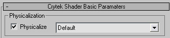
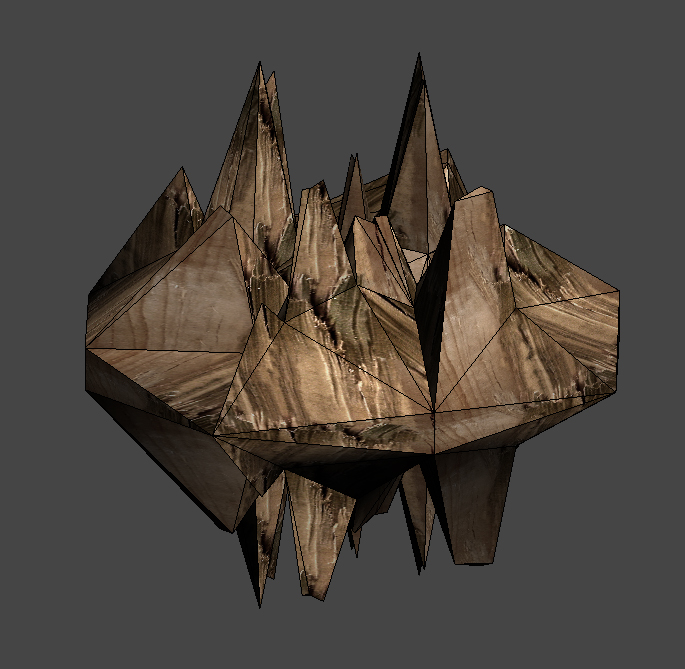

Обзор
Базовая физическая технология достаточно универсальна, чтобы сломать многие вещи, не только стволы деревьев. Это всего лишь вопрос настройки активов. Однако в приведенных ниже примерах мы сосредоточимся на стволах деревьев.
Система Boolean Destructibles позволяет вам наносить динамические физические повреждения сетки (дыры) твердым объектам в результате выстрелов или взрывов. Это делается без необходимости предварительного моделирования нарушенных состояний объекта. Он использует предварительно смоделированную трехмерную форму, которая вычитается (логическая операция) из исходного объекта в реальном времени в точном месте попадания пули.
Поскольку логические операции происходят в реальном времени, система динамически повторно триангулирует исходную модель (добавляя многоугольники) по мере необходимости, чтобы сохранить исходную форму твердого тела с дополнительными отверстиями или недостающими частями. Новые внутренние грани, добавляемые к объекту, принимают свойства и текстуры материала (включая UV) логической (субтрактивной) формы.
Примеры файлов
- Пример формы взрыва: cut_shape.max
- Пример дерева: sample_tree.max
Влияние на производительность
Фактическое влияние булевой системы на производительность зависит от комбинации геометрической сложности разрушаемого объекта:
- Геометрическая сложность булевой формы.
- Количество разрушаемых объектов, используемых на уровне.
- Число последовательных логических значений, примененных к разрушаемому объекту.
- Количество стрелков, одновременно стреляющих по разрушаемому объекту.
Общие рекомендации по выполнению:
- Держите хрупкий объект очень низкополигональным.
- Сохраняйте логический объект очень низкополигональным.
- Используйте хрупкие объекты на уровнях экономно, чтобы создавать интересные/стратегические игровые ситуации.
- Создайте и используйте параметры типа поверхности, чтобы ограничить частоту появления логических значений.
- Создайте и используйте параметры типа поверхности, чтобы ограничить максимальное количество логических значений, которые может принимать один объект.
- Производительность может заметно отставать, когда несколько стрелков быстро стреляют по одному разрушаемому объекту, вызывая одновременно несколько логических значений — чтобы избежать этой задержки, старайтесь не размещать логические разрушаемые объекты в области, населенной большим количеством стрелков.
Компоненты системы
Система включает в себя комбинацию различных компонентов (художественных ресурсов, типов материалов поверхности, параметров сценария физики) для полноценного функционирования. Создание новых типов разрушаемых поверхностей и/или логических форм потребует некоторого вмешательства инженера.
Вот обязательные компоненты системы:
Разрушаемый 3D-объект (например, столб)
Используя доступный разрушаемый тип поверхности в материале этого объекта (в Sandbox Material Editor), этот объект будет логически разрушаемым.
Требования:
- Искусство: Модель, материал, текстуры.
Тип разрушаемой поверхности (материал на разрушаемом объекте)
Каждый тип желаемой разрушаемой поверхности (например, дерево, бетон, кирпич и т. д.) должен быть определен в SurfaceTypes.xml и идентифицирован с определенной логической 3D-формой (смоделированной и текстурированной художником).
- После того как необходимые типы поверхности будут определены, они будут доступны в Sandbox Material Editor для назначения разрушаемому объекту, и тогда логические функции будут работать автоматически.
Требования:
- Код: Поверхность, определенная в SurfaceTypes.xml (это указывает на конкретную логическую форму, которая будет использоваться для вычитания).
- Код: Эффекты поверхности, определенные в MaterialEffects.xml.
Логическая 3D-форма
- Каждый тип поверхности должен иметь связанную с ним логическую форму, которая будет использоваться для вычитания из исходной поверхности.
- Логическая форма может использоваться несколькими типами поверхностей, однако логическая форма должна быть текстурирована в соответствии с исходной поверхностью (например, деревом, металлом, бетоном), а трехмерная форма должна визуально соответствовать типу разрушения, которое может получить объект.
Требования:
- Искусство : Модель, материал, текстуры.
- Код: Объект формы зарегистрирован в physics.lua.
После создания и определения различных SurfaceTypes (код) и логических фигур (искусство и код) художники могут легко создавать разрушаемые 3D-объекты (только искусство) для размещения на своих уровнях без дополнительной инженерной поддержки.
Настройка в 3dsMax
Для материала багажника включите «физическую форму» в Material Editor в 3dsMax. Установите параметр физики на «по умолчанию».

Важно:
- Удалите все прокси-физические объекты из частей, которые вы хотите сломать.
- Убедитесь, что ваша процедурная разрушаемая сетка закрыта и не имеет зазоров.
Создайте предопределенную сетку в дополнительном файле cgf, которая будет использоваться для «закрытия» сломанных частей.

Пожалуйста, взгляните на файлы, поставляемые с CRYENGINE SDK, они расположены в Game\Objects\natural\trees\explosion_shape. Например, нет необходимости создавать осколки, но их можно использовать позже для создания эффектов частиц вокруг ломающейся части.
Настройка в Sandbox
- В редакторе материалов Sandbox тип поверхности материала ствола должен быть установлен на "mat_wood_breakable".
- SurfaceType определяет эффект частиц и физические параметры хрупкости.
- physics.lua определяет предопределенную сетку, которая используется для закрытия ствола дерева. Он также определяет эффект частиц «осколки», который будет использоваться вместе с разрушением.
Файл находится по адресу:Game\Scripts\physics.lua - SurfaceType.xml определяет, какой эффект частиц использовать во время разрушения, а также определяет различные физические свойства. В приведенном ниже примере вы можете настроить различные эффекты для разрушения суставов, разрушения суставов и разрушения.
Файл находится по адресу:Game\Libs\MaterialEffects\SurfaceTypes.xml
<SurfaceType name="mat_wood_breakable" type="wood">
<Physics friction="0.5" elasticity="0.05" breakable_id="2" pierceability="7" break_energy="7000" hole_size="1.4" hit_points="10" hit_radius="0.4" hit_maxdmg="10" can_shatter="1" />
<BreakageParticles type="joint_break" effect="breakable_objects.tree_break.small" />
<BreakageParticles type="joint_shatter" effect="breakable_objects.tree_break.small" />
<BreakageParticles type="destroy" effect="breakable_objects.tree_break.small" count_per_unit="1" count_scale="1" scale="1" />
<AI fImpactRadius="2.5" fImpactSoundRadius="30" fFootStepRadius="20" proneMult="0.2" crouchMult="0.5" movingMult="2.5" />
</SurfaceType>
- Ломающиеся деревья необходимо размещать в качестве объектов растительности.
- breakable_id число — это любое число, которое вы определили в индексе хрупкости в файле Physics.lua.
- Эффекты частиц могут использовать осколки в качестве геометрии.
Physics.RegisterExplosionShape("Objects/default/explosion_shape/tree_broken_shape.cgf", 7, 2, 1, "",0,"");
Physics.RegisterExplosionShape("Objects/default/explosion_shape/tree_broken_shape2.cgf", 1.3, 3, 1, "",0,"");
Physics.RegisterExplosionShape("Objects/default/explosion_shape/tree_broken_shape3.cgf", 1.3, 5, 1,
"Objects/default/explosion_shape/trunk_splinters_a.cgf",1.6,"breakable_objects.tree_break.small");
- Информацию о содержимом physics.lua можно найти внутри файла.
Тип поверхности включает только идентификатор формы взрыва. Фактическая сетка регистрируется в Game\Scripts\physics.lua файл.
Новые сетки формы взрыва должны быть добавлены с помощью кода. После добавления сетки в physics.lua необходимо изменить типы поверхностей.
Отладка
- p_draw_helper 1 - Чтобы показать прокси.
- p_debug_joints 1 - Для проверки весов.
Выстрелите в дерево, чтобы проверить, можно ли его сломать.